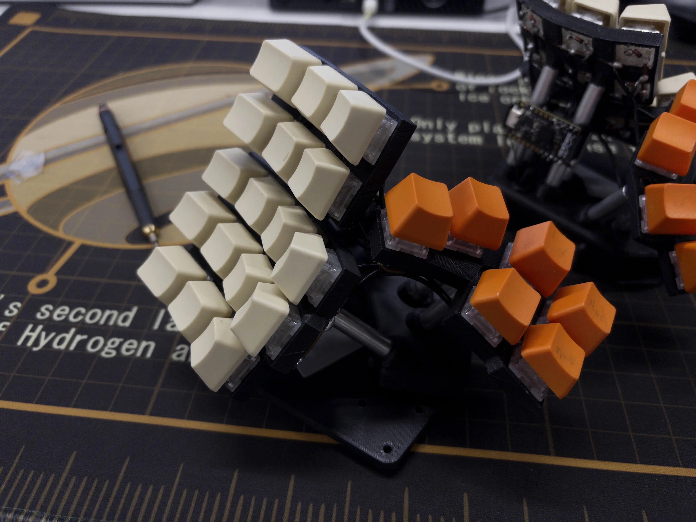
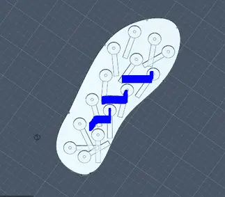
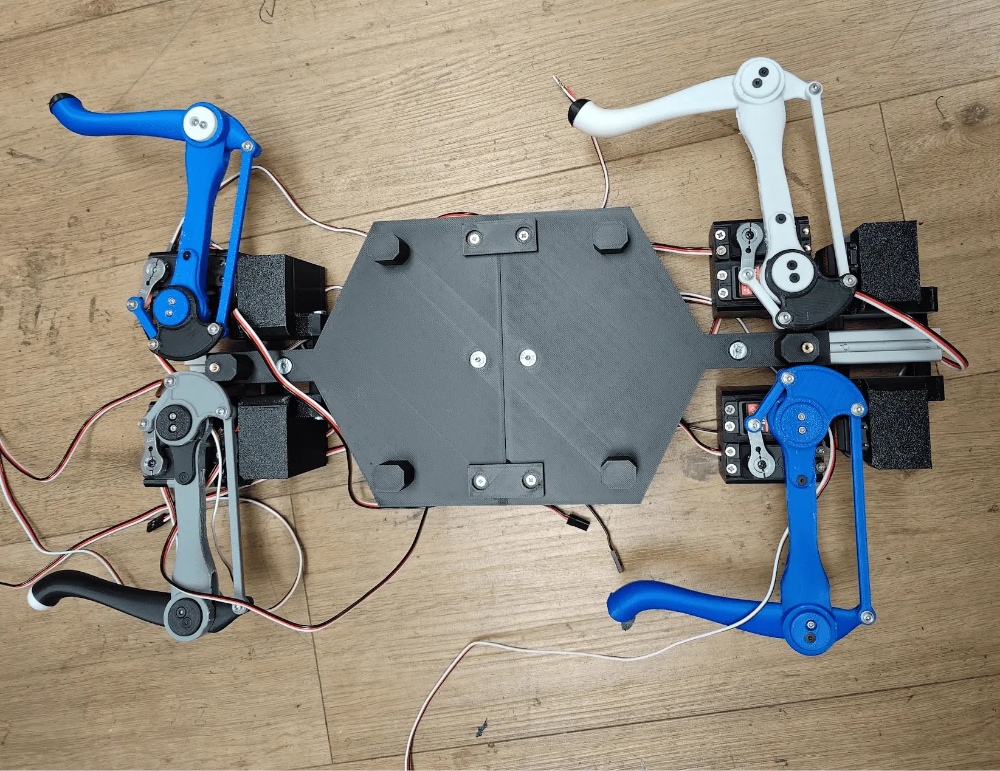

Projects
While many people in this club focus on 3D printers as their hobby, we also show how 3D printing can be used in a wide variety of projects.
You don't need to care about VFA minimization, bed tramming, or the thermoplastic characteristics of different polymers to see why a 3D printed hand is cool, how customizable a 3D printed keyboard can be, or how satisfying a 3D printed geared system can be.
You are free to make your projects your own in our club. Learn more about the projects we offer, and if you think of something else that would be a fun fit, reach out ;)



We currently offer 4 guided projects throughout the school year:
- Keyboards (Keebs)
- Biomed
- Gears
- Robotics
We primarily teach and use Fusion 360, which is free for all UCLA students. We have a strong focus on collaboration and year long planning, which leaves each student with the skills necessary to make for themselves.
You'll leave the year able to design, build, post process, and even show off projects you'd never thought possible. And you might make a few friends at the same time as well.